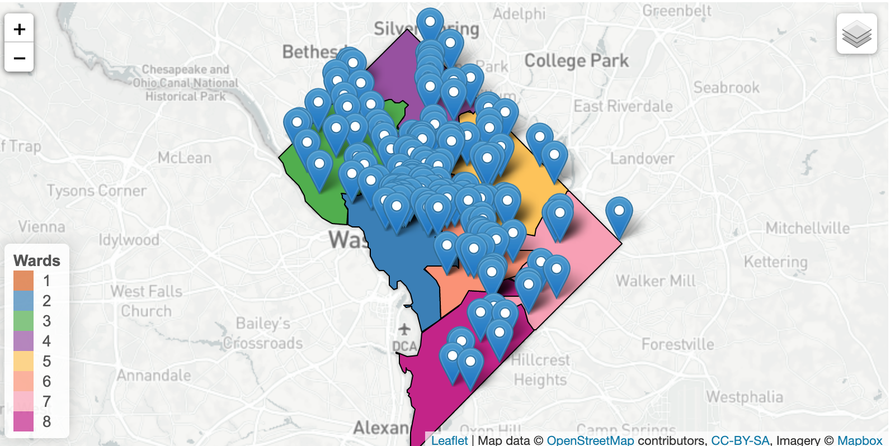
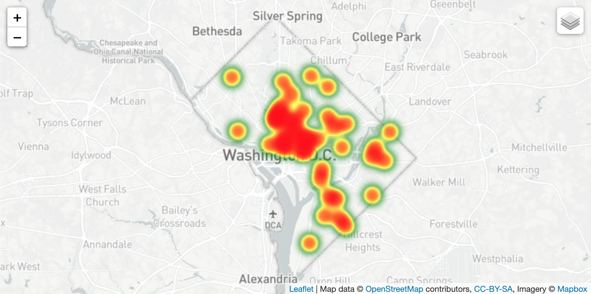
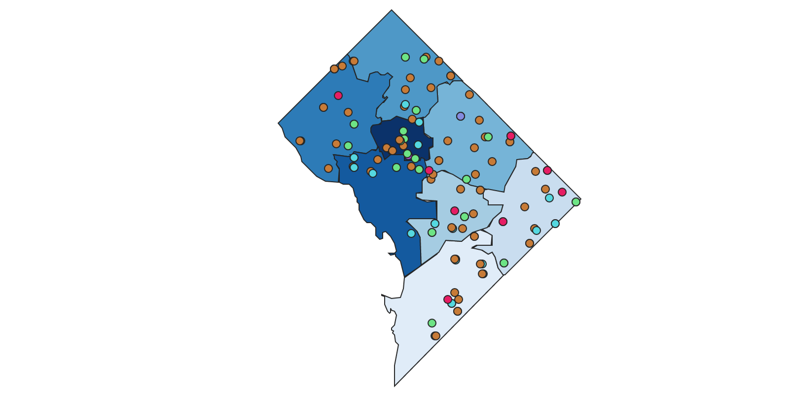
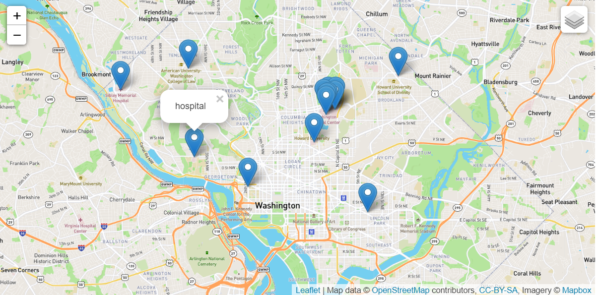

This page shows analysis of results of parks and health facilities in various neighborhoods of Washington, DC. The overall objective is to understand the availability and adequacy of health facilities and parks towards people's wellbeing. This includes a choropleth map showing all pharmacies in DC and also a heat map that illustrates the concentration of primary health care center. Also captured on this in this assignment is a picture of the National Institutes of Health (NIH) campus located in Bethesda, Maryland and a leftlet map of various parks and recreational facilities in DC.
The National Institutes of Health (NIH) campus
Chloropleth Map showing Showing Pharmacies in Each Neighborhood
Follow this link for the Interactive Map
Heat Map Showing Concentration of Primary Health Centers in Each Neighborhood
Follow this link for the Interactive Map
Distribution of Park Services in Each Neighborhood
Follow this link for the Interactive Map
Distribution of Hospitals in Washington, DC
Follow this link for the Interactive Map